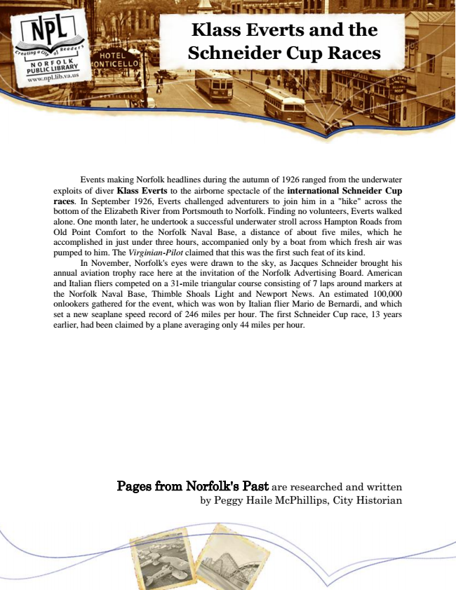

Klass Everts and the Schneider Cup Races
Events making Norfolk headlines during the autumn of 1926 ranged from the underwater exploits of diver Klass Everts to the airborne spectacle of the international Schneider Cup races. In September 1926, Everts challenged adventurers to join him in a "hike" across the bottom of the Elizabeth River from Portsmouth to Norfolk. Finding no volunteers, Everts walked alone. One month later, he undertook a successful underwater stroll across Hampton Roads from Old Point Comfort to the Norfolk Naval Base, a distance of about five miles, which he accomplished in just under three hours, accompanied only by a boat from which fresh air was pumped to him. The Virginian-Pilot claimed that this was the first such feat of its kind.
In November, Norfolk's eyes were drawn to the sky, as Jacques Schneider brought his annual aviation trophy race here at the invitation of the Norfolk Advertising Board. American and Italian fliers competed on a 31-mile triangular course consisting of 7 laps around markers at the Norfolk Naval Base, Thimble Shoals Light and Newport News. An estimated 100,000 onlookers gathered for the event, which was won by Italian flier Mario de Bernardi, and which set a new seaplane speed record of 246 miles per hour. The first Schneider Cup race, 13 years earlier, had been claimed by a plane averaging only 44 miles per hour.
Pages from Norfolk's Past are researched and written by Peggy Haile McPhillips, City Historian